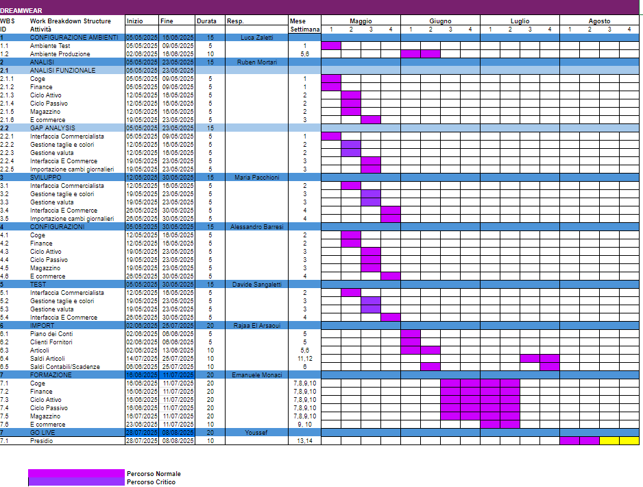

Pianificazione del Progetto (Diagramma di Gantt)
Dettaglio Pianificazione (Gantt)
La seguente immagine mostra il dettaglio delle attività pianificate per l'implementazione del progetto ERP Dreamwear.

Dettaglio Fasi del Gantt
- Kick-off Meeting e Definizione Team: Presentazione ufficiale, allineamento obiettivi, definizione ruoli e responsabilità. (S1)
- Raccolta Requisiti Dettagliata (Assessment AS-IS): Interviste, workshop con i key user per mappare i processi attuali e identificare le esigenze specifiche. (S1-S2)
- Analisi Funzionalità Ad Hoc Revolution: Studio approfondito delle capacità standard del gestionale in relazione ai requisiti. (S2-S3)
- Redazione Documento di Assessment: Formalizzazione dell'analisi AS-IS e dei requisiti. (S3)
- Gap Analysis: Identificazione degli scostamenti tra AS-IS e funzionalità standard, definizione dei gap da colmare. (S3-S4)
- Definizione Soluzioni TO-BE: Progettazione delle configurazioni, personalizzazioni e procedure per raggiungere gli obiettivi. (S4)
- Redazione Documento di Gap Analysis e Soluzioni: Formalizzazione delle soluzioni TO-BE. (S4)
- Approvazione e Pianificazione Implementazione: Revisione e approvazione dei documenti, finalizzazione del piano di progetto. (S4)
- Setup Ambiente di Test Ad Hoc: Installazione e configurazione iniziale del sistema in ambiente di test. (S5)
- Configurazione Moduli Standard: Parametrizzazione anagrafiche, ciclo attivo/passivo base, contabilità base. (S5-S7)
- Sviluppo Personalizzazioni (se necessarie): Realizzazione di eventuali script, report custom, integrazioni specifiche identificate nella Gap Analysis. (S7-S10)
- Migrazione Dati Iniziale (Anagrafiche Principali): Estrazione, trasformazione e caricamento (ETL) delle anagrafiche clienti, fornitori, articoli. (S8-S9)
- Test Interni Tecnici: Verifiche funzionali delle configurazioni e personalizzazioni da parte del team di progetto. (S10-S11)
- Formazione Utenti Chiave (Key Users): Training approfondito ai responsabili di processo sull'utilizzo del nuovo sistema. (S11-S12)
- User Acceptance Test (UAT): Test condotti dagli utenti chiave per validare la rispondenza del sistema ai requisiti. (S13-S14)
- Correzione Bug e Rifiniture: Risoluzione delle problematiche emerse durante gli UAT. (S14)
- Formazione Utenti Finali: Training a tutti gli utenti che utilizzeranno il sistema. (S14-S15)
- Migrazione Dati Finale: Caricamento dei saldi contabili, ordini aperti, etc. (S15)
- Preparazione al Go-Live: Checklist finale, backup sistema attuale, definizione piano di cut-over. (S15)
- Go-Live: Avvio del nuovo sistema in produzione. (Inizio S16)
- Supporto Post Go-Live Iniziale: Assistenza intensiva agli utenti nelle prime settimane di utilizzo. (S16 e successive)